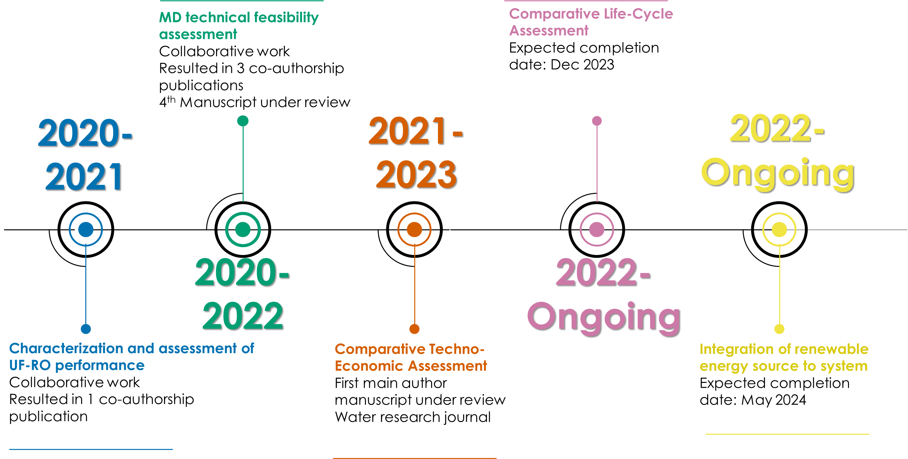

Welcome to my website
My name is Varinia Felix, I am currently a PhD student at the University of Arizona.
.jpg)
My name is Varinia Felix, I am currently a PhD student at the University of Arizona.
Information about current projects.

Hardikar, M., Ikner, L. A., Felix, V., Presson, L. K., Rabe, A. B., Hickenbottom, K. L., & Achilli, A. (2021). Membrane distillation provides a dual barrier for coronavirus and bacteriophage removal. Environmental Science & Technology Letters, 8(8), 713-718.

Souza-Chaves, B. M., Alhussaini, M. A., Felix, V., Presson, L. K., Betancourt, W. Q., Hickenbottom, K. L., & Achilli, A. (2022). Extending the life of water reuse reverse osmosis membranes using chlorination. Journal of Membrane Science, 642, 119897.

Presson, L., Felix, V., Hardikar, M., Achilli, A., & Hickenbottom, K. L. (2022). Fouling Characterization and Treatment of Water Reuse Concentrate with Membrane Distillation: Do Organics Really Matter. Available at SSRN 4279583.

Hardikar, Mukta, et al. "Pore flow and solute rejection in pilot-scale air-gap membrane distillation." Journal of Membrane Science 676 (2023): 121544.

Hardikar, M., Felix, V., Rabe, A. B., Ikner, L. A., Hickenbottom, K. L., & Achilli, A. Virus Rejection and Removal in Pilot-scale Air-gap Membrane Distillation
Under review:
Felix, V., Hardikar, M., Hickenbottom, K. L., Comparative Techno-Economic Assessment of Membrane Distillation for Inland Concentrate Management of Reverse Osmosis Brines.
For updates on my work check out my Google Scholar and Linkedin.
If you would like to collaborate, you can reach me via email at variniafelix@arizona.edu